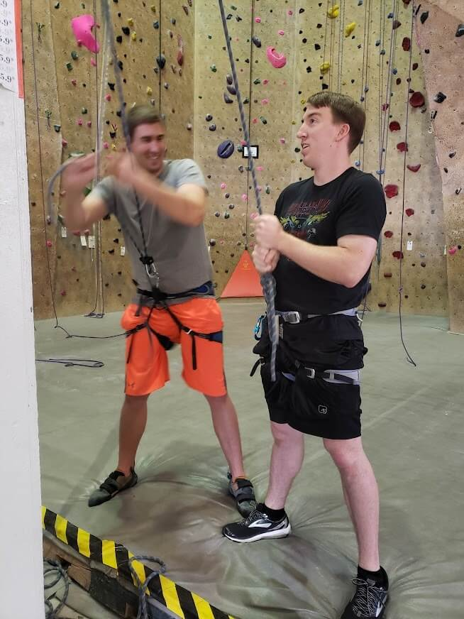
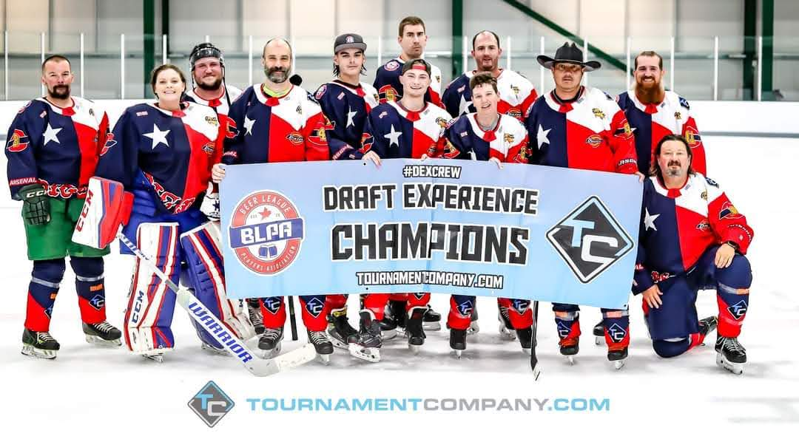

Get Moving!
What are you waiting for?
More than a resolution
One of the most common goals, especially around new years, is to loose weight, or get in better shape, or even to simply just do more physically. I hope you are inspired during your visit here to get moving! There are a large variety of benefits that come with many different types of activities, and there are some benefits that are shared by almost all forms of exercise. Here I hope to accomplish two major objectives; to give examples of hobbies I have enjoyed which gave me purpose in exercising, and to share the benefits I have personally enjoyed during times of improved fitness. Everyone enjoys different things, and has different means, but I want to share a few things that have worked for me.



Climbing
Here is a photo of me introducing my friend, Alex, to climbing. He ended up loving it just a little less than me. I was first introduced to rock climbing about 7 years ago, while dating the woman that is now my wife! I really liked it the first time, but having never done it before, I was exhausted quickly. Even when I was fresh, I wasn't able to make it to the top of the 50 ft wall. I didn't start climbing regularly until about 4 years later. The first sessions were SHORT, but I built up stamina pretty quickly, and grew to love it even more quickly.
Hockey
My friend introduced me to hockey about 2 years ago. I ended up loving it just a little less than him. But it is still a blast. I'm not very good... like... at all, but it is fun, and great exercise. Plus, at 6'4" and 230 lbs., I bring a pretty good initial intemidation factor. It fades quickly though, once my oponents realize I handle the puck about as well as a one year old handles a spoon while feeding themselves. Ooof... In any case, even just ice skating is a blast. It also helps that it is much more affordable and available than hockey.